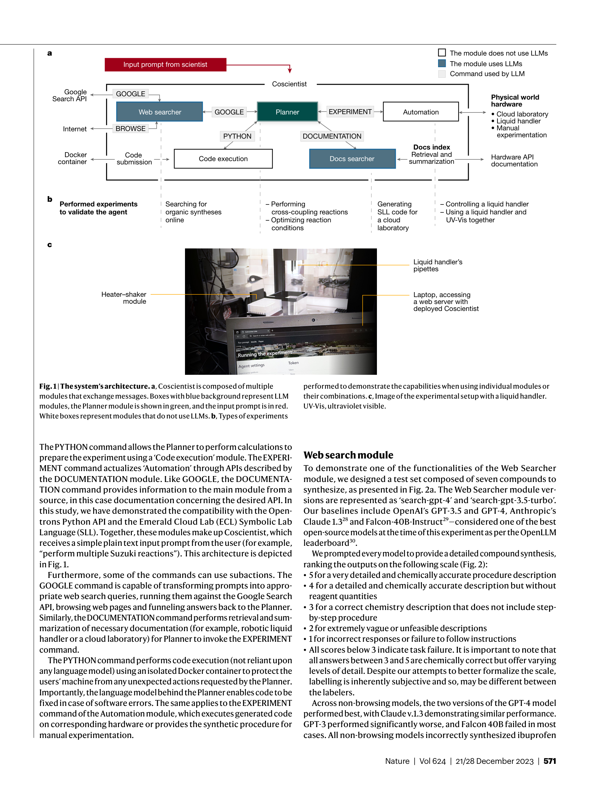
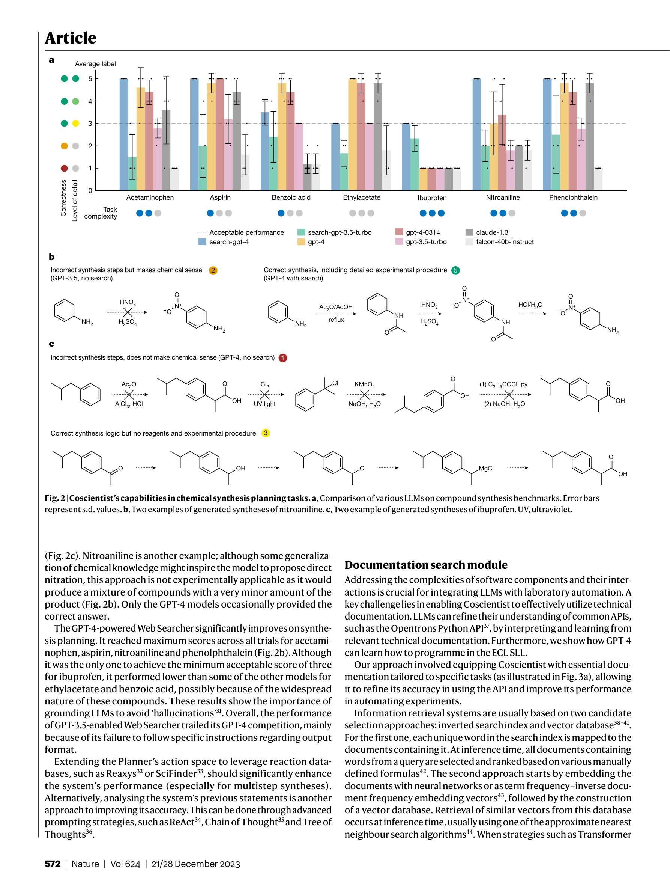
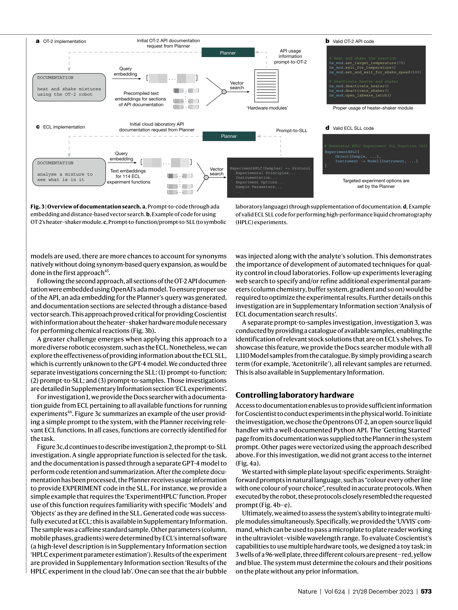
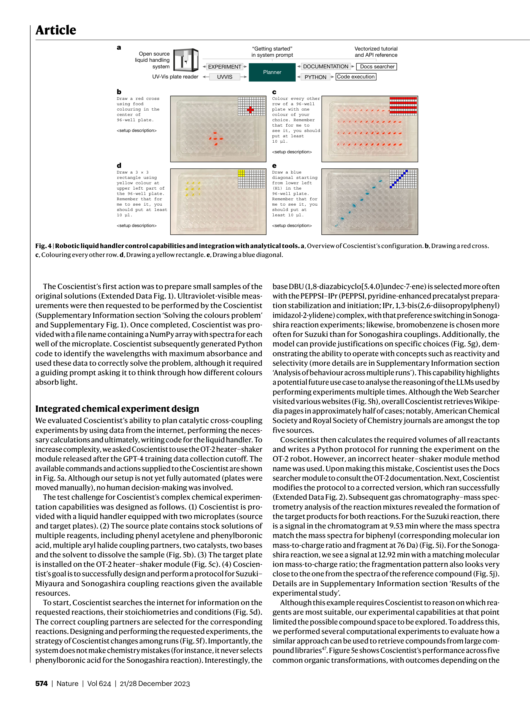

저자: Daniil A. Boiko, Robert MacKnight, Ben Kline, Gabe Gomes | 날짜: 2023-12-21 | Journal: Nature | DOI: 10.1038/s41586-023-06792-0

Figure 1
Coscientist는 GPT-4를 핵심 Planner로 활용하여 인터넷 검색, 문서 탐색, 코드 실행, 실험 자동화 도구를 통합한 multi-LLM 기반 AI 에이전트 시스템으로, 화학 합성 계획부터 로봇 liquid handler 제어, 클라우드 실험실 연동, 반응 조건 최적화까지 6가지 과제를 (반)자율적으로 수행한다. 특히 palladium 촉매 cross-coupling 반응(Suzuki-Miyaura, Sonogashira)의 자율 설계 및 실행과, 기존 데이터 기반 반응 조건 최적화에서 Bayesian optimization을 능가하는 성능을 실증했다.

Figure 2

Figure 3

Figure 5
총평: Coscientist는 LLM을 화학 실험의 자율적 설계-실행에 적용한 선구적 연구로, "AI가 실제 물리적 실험을 수행한다"는 패러다임을 Nature에서 처음으로 대규모 실증했다. 모듈형 아키텍처 설계, 문서 기반 API 학습, 반응 최적화에서의 chemical reasoning 정량화 등 기술적 기여가 탄탄하며, 특히 GC-MS 검증을 통해 실제 화학 반응 생성물 형성을 확인한 점이 설득력 있다. 다만, 실험 규모와 다양성이 제한적이고, data contamination 우려가 완전히 해소되지 않아 후속 연구의 여지가 크다.